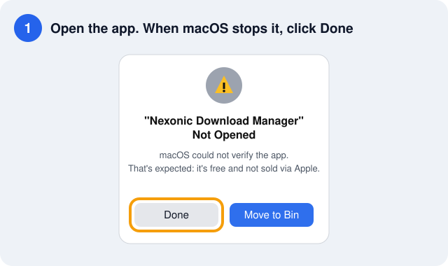
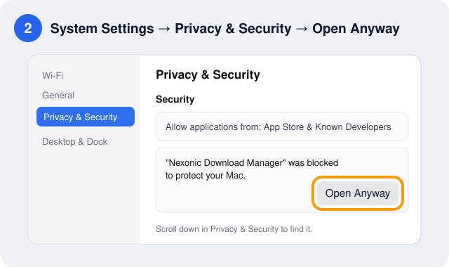
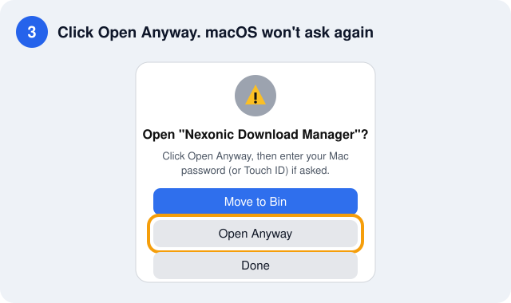

0.6.7 Latest
- Clear message when a video needs you to be signed in, with what to do next.
Download up to 32 times in parallel, pause and resume anytime, schedule downloads for the night and save videos from 1,000+ sites in the quality you pick. No ads, no account, no tracking.

Version __VERSION__. Everything is included: the video engine, ffmpeg and the command-line tool. Nothing else to install.
Nexonic Download Manager runs on Mac and Windows computers. Open this page on your computer to download it.
macOS 13 or later · Apple silicon and Intel
Download for Mac (.dmg) Mac app (.zip)Windows 10 and 11 · 64-bit
Download for Windows (.exe) Portable, no install (.zip)ndm commandInstall the app first, then add the extension
Chrome, Edge, Brave, Opera Firefox add-onInstalls or updates the app in Applications and opens it, with no security warning.
curl -fsSL https://shahrukhalid.github.io/nexonic-download-manager/install.sh | bashDownload links always fetch the latest release from GitHub. Every file is listed with its SHA-256 on the release page. Installation help: Install guide.
An open-source alternative to Internet Download Manager (IDM), built natively for each system with the same features on both.
Each file is split into parts that download at the same time, with up to 32 connections. Finished connections help the slowest part, so all stay busy to the end.
Stop and continue later, even after you quit the app or restart the computer. A file that changed on the server is downloaded again instead of mixed up.
Right-click a download, choose Refresh Link and paste a fresh link. It continues where it stopped, without starting over.
Click a download link in Chrome, Edge, Brave, Opera or Firefox and a compact window shows name, size, category and folder. If the app isn't running, the browser simply keeps the download.
Save videos from YouTube, Instagram, Facebook, X, TikTok and 1,000+ sites in the quality you pick, up to 4K/8K, or sound only.
Files are sorted into Compressed, Documents, Music, Video, Programs and Images, each saved in its own folder. Browse All, Unfinished and Finished.
Start a queue at night, stop it in the morning, run downloads one by one or a few at a time, then quit, sleep or shut down when done.
Download numbered series like img[001-100].jpg, every file linked from a page, or links you copy. Paste several links at once.
Limit speed for all downloads or just one, use a proxy, sign in to password-protected files and verify checksums.
Add downloads from scripts with ndm <link>, including queues, folders and limits. Run ndm help for every option.
New versions appear when you open the app, with what's new, Update Now, Remind Me Later or Skip. Each update is verified before it installs.
No account, no ads, no tracking. Your downloads, cookies and passwords stay on your computer, protected for your user only.
Three steps, and every download link you click goes through Nexonic.
Download it for Mac or Windows and open it once, so it can register with your browsers.
Add the browser extension to Chrome, Edge, Brave, Opera or Firefox. It takes about 30 seconds.
Click a link or the Download this video button. Pick the folder or quality and press Start Download.
The extension hands the link to the app with its cookies and referrer, so downloads from sites where you are signed in just work.

Each download gets its own progress window, and several can run side by side.

Point at a video and click Download this video, or paste the page link into Add URL. The qualities the video offers are listed with their approximate size.
Copy-protected services are not supported. Only download what you have the right to save, and respect each site's terms.

The same features on both systems, in light and dark mode. Click any picture to enlarge it.


Updating? Install the new version over the old one; your downloads and settings are kept. Or use Update Now inside the app.
.dmg, click Agree and drag the app onto Applications.xattr -cr "/Applications/Nexonic Download Manager.app"NexonicDownloadManager-Windows-Setup.exe.NexonicDownloadManager.exe.NexonicExtension-Chrome.zip.chrome://extensions, edge://extensions…) and turn on Developer mode..xpi onto a Firefox window.macOS asks once for each version. Updates installed with Update Now open without a warning.



On macOS 13 and 14 you can also right-click the app → Open → Open.
The full user guide is built into the app (Help, ⌘? on Mac, F1 on Windows) and online.
| To | Do this |
|---|---|
| Download a link | Add URL (⌘N / Ctrl+N), paste one or more links, Start Download |
| Save a video | Point at the video → Download this video, or paste the page link into Add URL and pick a quality |
| Download from a website | Click the download link in your browser; the app takes over |
| Download at night | Scheduler → New Queue → set the time → add downloads with Download Later |
| Continue an expired download | Right-click → Refresh Link… and paste a fresh link |
| Download a numbered series | Batch → write the link once with a pattern, e.g. file[01-50].jpg |
| Grab every file from a page | Grabber → enter the page address → filter by type → download the ones you check |
| Limit speed | Settings for all downloads, or Properties for one |
| Use the command line | ndm https://example.com/file.zip --queue Night · Mac: Settings → Browsers & Command Line → Install ndm Command |
| Stop or resume everything | ⇧⌘P stop all · ⇧⌘R resume all (Ctrl on Windows) |
Open source, so anyone can check what it does.
The app only connects to the addresses you download from, and to GitHub for updates and its video engine.
Cookies and passwords are kept in a file only your user can read on Mac, and encrypted for your user on Windows.
Cookies and logins go only to the download's own server, never to other hosts or after a switch from https to http.
An update installs only if it matches the SHA-256 published with the release; on Mac the app's identity is checked too.
Every part the server sends is checked, so a changed file is never mixed with old parts.
Swift and SwiftUI on Mac, C# and WPF on Windows. Built and tested in public on GitHub.
The full history is in the changelog and on the releases page.
Can't find your answer? Ask in Discussions.
Yes. Nexonic Download Manager is free and open source under the MIT license, with no ads, no account, no trial and no tracking.
Yes. It is a native Mac app with IDM-style features: multi-connection downloads, pause and resume, categories, a scheduler, queues and browser integration. It is not affiliated with Internet Download Manager.
Chrome, Edge, Brave and Opera through the extension, and Firefox through the add-on. Open the app once, then install the extension and restart the browser.
Open the app once so it can register with your browsers, then restart the browser. If the app can't be reached, the browser keeps the download, so nothing is lost.
That's expected: the app is free and not sold through Apple, so macOS asks once. Follow the three steps in First launch on Mac, or install with the one-line Terminal command and there is no warning.
It saves videos from 1,000+ sites and streamed video. For videos that need you to be signed in, open the video in your browser while signed in and click Download this video, or add your login under Properties → Login. Copy-protected services are not supported.
The video engine updates itself every day, so try again later. If it still fails, report the problem with the page link.
The app tells you when a new version is out and installs it with Update Now (it closes, updates and opens again). You can also use Check for Updates, or download the new version from this page and install it over the old one.
In your Downloads folder by default, sorted into category folders (Downloads/Video, Downloads/Music…). You can choose another folder in the download window or turn categories off in Settings.
Open an issue on GitHub with your system, the app version from About, and the link if it is public.
Free for Mac and Windows, with the browser extension for Chrome, Edge, Brave, Opera and Firefox.